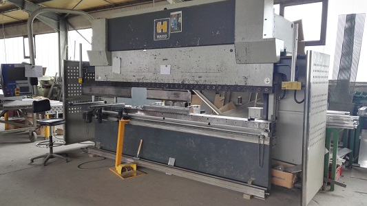
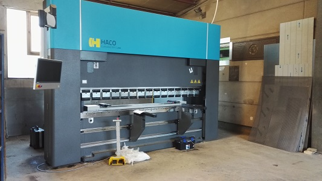
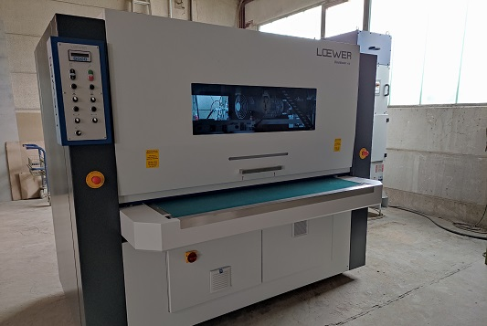
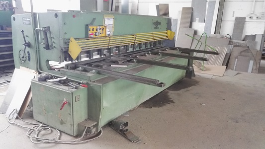
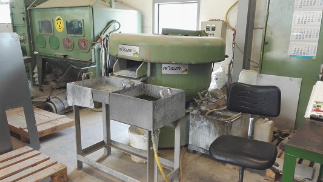

Neben einfachen spanenden Bearbeitungsschritten wie Gewindeschneiden, Reiben und Ansenken ist die Haupttechnologie eindeutig das Abkanten und das Rundwalzen, das durch Schweißen und Punktschweißen ergänzt werden kann.
Mit der Kombination Laser - Abkanten - Schweißen sind wir in der Lage kleine Baugruppen komplett anzufertigen.
Wir arbeiten außerdem Hand in Hand mit einer namhaften Edelstahlbeizerei.
Abkantpresse Haco (220t)
Max. Blechdicke 10mm - Max Länge 3,6m

Abkantpresse Haco (250t)
Max. Blechdicke 10mm - Max. Länge 3,1m

Schleif- und Entgratmaschine
Arbeitsbreite 1500mm

Schlagschere
Max. Blechdicke 6mm - Max Länge 3m

Trovallierer
Kleinteile können in unserer Gleitschleifanlage entgratet werden und sorgen für eine schöne Optik.

Strahlkabine (im Hintergrund)
(2000x1000x900mm)